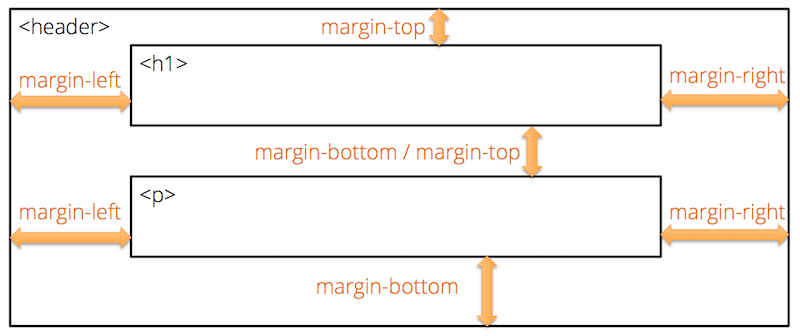
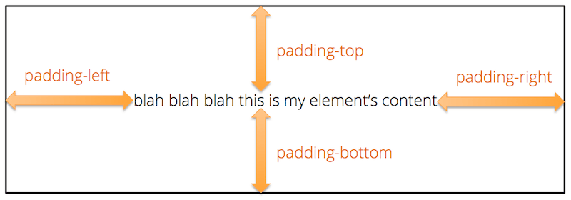

CSS (Cascading Style Sheets) is a declarative language that we use to alter the appearance of our HTML pages. A CSS file (known as a stylesheet) consists of a set of formatting rules. The browser interprets and applies these rules when it renders your web page.
CSS is immensely powerful and flexible. You can control nearly every aspect of an element's appearance, including its overall placement on the page. To give you some idea of just how much control you have, check out the examples in the CSS Zen Garden. Every one of those examples uses the exact same HTML page, but they all look completely different because each one uses a different CSS stylesheet.
Why Two Different Languages?
If you are new to web programming, you might be wondering why there are two different languages: HTML for your page content; and CSS for your formatting rules. Why not just include the formatting right in with the content?
There is an old, tried-and-true principle of programming that is known as the separation of concerns. Good software keeps separate things separate and loosely-coupled so that it's easy to change one without breaking the other. One typical separation that you will see in nearly every information system is the separation between data and the way those data are presented on-screen.
By separating our data from the way it's presented, we achieve a number of benefits:
- Several HTML pages can all share the same CSS file, allowing us to change the look of our entire site by editing only one file.
- The same HTML can be presented to different users in different ways. For example, you could allow users to "skin" the site in one of several different themes, or you could use different default formatting for different regions of the world with different aesthetic sensibilities
- You can also dynamically adjust the look of your page by applying new style rules to elements in response to user interaction (clicking, hovering, scrolling, etc.)
Adding a Stylesheet to your Page
You can add CSS rules to your page in three different ways, but the best practice is to use a separate CSS stylesheet file, and link that to your HTML page. These stylesheet files are typically put into a css/ subdirectory to keep them separate from all your HTML pages.
For example, say you wanted to create one stylesheet for your index.html page that you created during the Essential HTML tutorial. Create a new directory named css next to your index.html file. Then create a new file in that new css/ directory named main.css. The resulting file structure should be like this:
index.html
css/
|-- main.cssNow link this new stylesheet to your HTML file by adding the following element to the <head> section of your page:
<head>
...existing elements...
<link rel="stylesheet" href="css/main.css">
</head>The name you use for your CSS file can be anything you want. It just needs to match what you put in the href attribute of the <link> element.
Basic Syntax
A CSS stylesheet follows this basic syntax:
selector {
property: value;
property: value;
}
selector {
property: value;
property: value;
}A stylesheet is a series of rules. A rule starts with a selector, which specifies which elements the rule applies to. The selector is followed by a pair of braces, inside of which is a set of formatting properties, which are name and value pairs. The property name is separated from the property value by a colon, and each property/value pair must end with a semi-colon. If you forget the semi-colon, the browser will likely ignore the property setting, so don't forget it!
Like most programming languages, multiple whitespace characters are coalesced into one, so the layout of the rule can vary. For example, you can start the braces on the line below the selector, or you can put everything all on one line if you want. But most developers will use the style shown above, as it's easy to read and maintain. For large CSS files, professionals will typically minify them before deploying them to a production server, which involves removing all the whitespace to make the file smaller.
Selectors
There are many kinds of selectors supported in CSS, but you will typically use only a handful in most situations.
Element Selectors
Element selectors select elements by their element name. For example, this selector will select all <p> elements in the page, regardless of where they exist.
p {
...
}Class Selectors
Class selectors select elements by the value of their class attribute. Every HTML element can have a class attribute set to one or more class names. Multiple class names are separated by a space, and for obvious reasons, your class names can't contain spaces. For example, this paragraph element has two class names: alert and alert-warning.
<p class="alert alert-warning">...</p>After you add a class attribute to an element, you can then refer to that class in your CSS using a class selector. Class selectors look like this:
/* selects all elements with class="alert" */
.alert {
...
}
/* selects all elements with class="alert-warning" */
.alert-warning {
...
}Note the . character at the start of the name. That tells the browser that what follows is a class name and not an element name. But remember that the . character is used only in the CSS rule; in your HTML class attribute, you use the class name without the preceding . character.
Multiple elements within your page can all share common class names, so you can define style classes for common UI components that you use in several places. Define a rule in your CSS using a class selector and the formatting properties you want, and then add that class name to the class attribute on any HTML element in your page that should be styled using those formatting properties.
CSS rules are also additive. If you attach multiple style classes to the same element (like we did above), the browser will combine all formatting properties from all style rules in the order that they are defined. So in the case above, because the paragraph has both the alert and alert-warning style classes, the browser will combine all formatting properties from the .alert and .alert-warning rules and apply all of them to the element. If the same property is defined in both rules, the later one will override the earlier one.
ID Selectors
ID selectors select elements by their id attribute. Every HTML element can have an id attribute, but unlike the class attribute, the value of the id attribute must be unique within the page. That is, no two elements can have the same value for their id attributes. Thus, the id attribute is less flexible than the class attribute, and should be used only when you really need to refer to a specific element and only that one element.
ID selectors start with a # sign:
/* selects the element with id="my-id" */
#my-id {
...
}Since the id attribute is commonly used to create bookmark hyperlinks (i.e., links that scroll the page to a particular section of the page), id selectors are a handy way to style those elements.
Descendant Selectors
All the selectors mentioned so far will select all matching elements regardless of where they are in the HTML element tree. But sometimes you want to style only a set of elements that exist within a particular parent or ancestor element, and not all the other matching elements elsewhere in the page. You can do this kind of targeted selecting using a descendant selector.
For example, say you wanted to style all paragraphs within the <header> element, but not the other paragraph elements that exist elsewhere in the page. You can select just those paragraph elements using a selector like this:
/* selects only the p elements contained withing header elements */
header p {
...
}The syntax is a space-delimited list of selectors, so you can use element or class selectors at each level. You can also have as many levels as you want, but it's best practice to use no more than two or three. For example, to target all elements with the style class .logo that exist inside a paragraph that exists inside the header, your selector would look like:
/* selects elements with class="logo"
contained within p elements
contained within header elements */
header p .logo {
...
}Note that descendant selectors will select matching descendant elements anywhere lower in the tree branch, not just direct children, so the .logo elements here could be nested several layers below the <p> element. This is usually a good idea because you may introduce new nesting layers to your page as you go along. But if you really want to select only direct children, you can use this variant of the syntax, known as a child selector:
/* selects only the p elements that are direct children the header element */
header > p {
...
}Group Selectors
Sometimes you want to apply the same formatting to several elements, all of which might have different element names or style classes. For example, you might want to set the same font-weight on all the h1, h2, and h3 elements. Instead of defining three separate rules, you can use one rule with a group selector:
/* selects all h1, h2, and h3 elements */
h1, h2, h3 {
font-weight: 300;
}The syntax is a list of selectors separated by commas. You can use element, class, or even descendant selectors for each element in the list.
Group selectors are an excellent way to adhere to the DRY principle: Don't Repeat Yourself! If you find yourself copying and pasting formatting properties between rules, stop and ask yourself if you can use a group selector instead.
Hover and Focus Pseudo Selectors
The last types of selectors that you will use quite often are the hover and focus pseudo-selectors. These select elements that the mouse is hovering over, or that have the keyboard focus, respectively. You can use these to apply different formatting on hover or focus, usually to indicate that the element is clickable, or to help those with vision impairments notice where the keyboard focus is. The syntax looks like this:
/* selects all elements with class="nav-link" */
.nav-link {
#color: #FFFFFF;
}
/* selects all elements with class="nav-link" that are being hovered over with the mouse */
.nav-link:hover {
/* change color to red */
color: #FF0000;
}
/* selects all <input> elements that have keyboard focus */
input:focus {
/* change background color to yellow */
background-color: #FFFF00;
}Other Selectors
These are the most common ones you will use, but there are many other kinds of powerful selectors you also have at your disposal for less-common tasks. See the CSS Selectors Reference for a complete list.
Practice Using Selectors
Now take a moment to practice using selectors by playing CSS Diner!
The Cascade
A typically stylesheet will contain lots of rules, so the natural next question is, how do all of these rules combine, and what happens when I define conflicting rules?
Although the actual algorithm is pretty complex, you can think of it this way:
- The rules are processed in the order that they are defined in the CSS file. If you link multiple CSS files to the same page, the files are processed in the order they are linked in the HTML page.
- The browser selects the elements matching the rule and applies the formatting properties within the rule.
- If a later rule selects the same element and provides a different setting for a property already set by an earlier rule, the later rule's setting overrides.
This simple explanation is accurate in most cases, but there are a few cases where it isn't quite right. The CSS standard gives higher priority to some selectors over others, making the order in which they were defined irrelevant in some cases. The concept is known as Selector Specificity, and you may run into cases where this becomes important. If you notice that one of your style rules is not being applied, despite your syntax being correct, check your browser's developer tools to see if your rule is being overridden by a more specific rule in an earlier stylesheet. Then adjust your rule so that it has the same or greater specificity.
Colors
In the examples above, you may have noticed several color values like #FF0000. This is the color red expressed in hexadecimal, which is one way we can express colors in CSS.
On a computer screen, every representable color is a combination of red, green, and blue light. The amount of each color is expressed as a number between 0 (no color) and 255 (full color). Every color is thus defined by three numbers, each of which is somewhere between 0 and 255. Black (the absence of all color) is 0,0,0 and white (all colors at maximum) is 255,255,255. Pure red would be 255,0,0, pure green would be 0,255,0, and pure blue would be 0,0,255. The order is always red,green,blue (RGB).
CSS lets us define a color in three different ways. The first syntax looks like a function where we specify each of the numbers as separate arguments:
p {
/* pure red */
color: rgb(255,0,0);
}As the name of the rgb() function suggests, the first number represents the amount of red, the second the amount of green, and the third the amount of blue.
The second syntax uses the same numbers, but expresses them in hexadecimal (base-16) instead of decimal. It also uses a more compact representation:
p {
/* pure red */
color: #FF0000;
}The hex representation starts with a # symbol and is followed by six hexadecimal characters. The first two are the amount of red, the second two the amount of green, and the final two are the amount of blue. Hexadecimal FF is the same as decimal 255.
The final syntax allows us to define semi-transparent colors. For example, say you wanted the background color of an element to be semi-transparent black, so that whatever is underneath it will still be slightly visible. We can define that kind of color using the rgba() function:
p {
/* semi-transparent black */
background-color: rgba(0,0,0,0.5);
}The rgba() function is like the rgb() function, but it adds one more parameter to control what is known as the alpha channel. This value specifies how opaque the color is. It is expressed as a decimal value between 0 (fully transparent) to 1 (fully opaque). A value of 0.5 is half-transparent.
Measurement Units
Before we discuss the other core concepts, we need to take a slight digression into CSS units. Many CSS properties that affect the size of things can be specified in one or more units. CSS supports several absolute units, as well as several relative units.
The absolute units are as follows:
| Unit | Meaning |
|---|---|
| cm | centimeters |
| mm | millimeters |
| in | inches |
| px | pixels, which are defined as 1/96 of an inch, regardless of how dense the pixels are on the current display |
| pt | points, which are defined as 1/72 of an inch |
In addition to these absolute units, you can also use these relative units:
| Unit | Meaning |
|---|---|
| em | the height of the current element's font |
| rem | the height of the root element's font (i.e., the font used on the root html or body element) |
| % | a percentage of the parent element dimensions or parent element's font |
| vw | one percent of the viewport width (i.e., the width of the browser window) |
| vh | one percent of the viewport height (i.e., the height of the browser window) |
Absolute units are best for things you want to be consistent across devices (e.g., font size, or maximum width of some content). Relative units are best for things you want to adjust based on context (the width of a column in a multi-column layout, or the relative font size of an <h1> compared to the base font).
The Box Model
The next core CSS concept you should understand is the box model. Every HTML element defines a box on the page. By default, the dimensions of the box are just large enough to contain the content inside the element, but we can alter these dimensions in several ways. We can also layout and position the box in any way we want to.
Each box can have a margin, border, and padding. Margins push elements away from the other elements that are next to them, letting the background color of the containing element shine through the gap. Padding adds space between the element's border and its content, letting the background color of the element shine through the gap. By default, elements don't have any visible borders, but you can make them visible by setting their color, width, and style (solid, dashed, dotted, etc.) properties.


Browsers will typically overlap margins of similar elements. For example, if you have two paragraphs on top of one another, and you set margin-bottom on the first and margin-top on the second, most browsers will overlap those margins and just use the larger of the two. But if the elements are different, it will typically add the margins together, creating a rather large gap.
You can also set the width and height of elements explicitly, though be careful when you do this. If your width and height are too small, the element's content will be clipped by default (this behavior is controlled by the overflow property). It's generally best to set only the width or the height, but not both. You can also specify a min-width or min-height to ensure that the width or height is at least a particular size. Conversely, you can use max-width and max-height to ensure that the element is at most a particular size.
Conclusion
CSS is a very powerful language that gives us total control over the appearance of our pages. We've only scratched the surface in this tutorial. If you're wanting to learn more, consult these resources:
- CSS Selectors Reference: A handy table showing all the various kinds of CSS selectors with examples and descriptions of what they select.
- CSS Properties Reference: A complete reference for all the various CSS properties, organized by function.
- CSS Units Reference: Short reference of the various unit measurements supported in CSS and their suffixes.
- CSS Tricks: A blog dedicated to interesting things you can do with CSS.